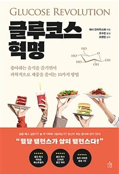
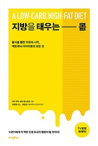
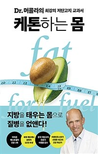
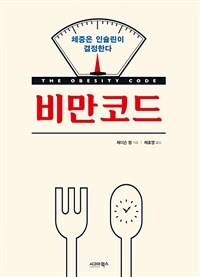
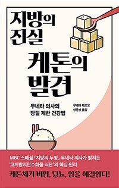
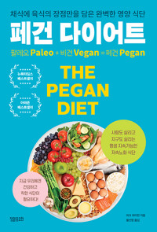
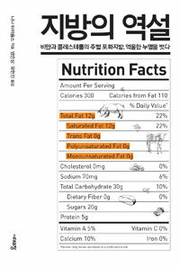
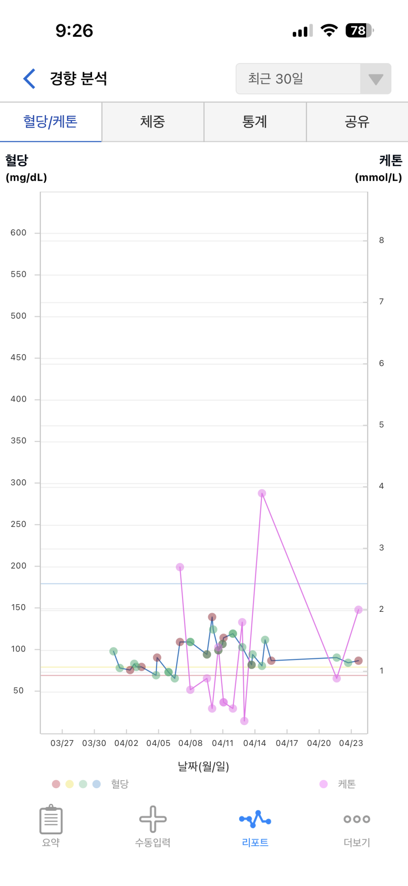

읽은 책 7권

글루코스 혁명
좋아하는 음식을 즐기면서 과학적으로 체중을 줄이는 10가지 방법
기본 · 구매 추천
이 책은 기본으로 봐야 하는 책. 생화학자가 음식이 우리 몸에 들어가서 어떤 일들이 벌어지는지 아주 쉽게 얘기해준다.
과학과 임상이 모두 커버되어 이해하기 매우 좋다.

지방을 태우는 몸
저탄수화물, 고지방 식이요법 케토제닉 다이어트의 모든 것
입문서 · 구매/도서관 모두 OK
저탄고지 입문서로 추천할 만하다. 저자가 직접 자기 몸으로 실험하고 배워나가는 과정을 같이 할 수 있어 이해와 몰입이 쉽다.
레시피 소개도 되어 있다.

케톤하는 몸
Dr. 머콜라의 최강의 저탄고지 교과서
의학적 접근 · 도서관 추천
의사라서 그런지 정답을 주듯이 쓰여진 책. 아이허브에서 닥터 머콜라 브랜드를 봤다면 알겠지만 장사를 잘 하는 분이라 백퍼센트 신뢰하기는 꺼려진다.
그래도 의학적 접근에 대해 알고 싶다면 추천한다. 빌려서 보는 걸 추천.

비만 코드
체중은 인슐린이 결정한다
개념 정리 · 도서관 추천
캐나다의 신장전문의인 제이슨 펑은 간헐적 단식과 저탄고지 식단을 지지한다. 인슐린저항성이라든지 저탄고지 관련 개념에 대한 설명이 많다.
아쉬운 점은 문장이 깔끔하지 못해서 잘 읽힌다고 하긴 어렵다고 느껴진다. 빌려서 보기.

지방의 진실 케톤의 발견
무네타 의사의 당질 제한 건강법
짧고 흥미로움 · 도서관 추천
산부인과 의사인 저자가 산모가 태아에게 주는 영양소와 태아의 에너지 대사 등에 대해 관찰하여, 인체는 본래 지방 대사 상태로 태어난다는 사실을 밝힌다.
얇고 작은 책으로, 아기에 관심이 있으면 더욱 재미있을 책. 빌려서 보기.

페건 다이어트
채식에 육식의 장점만을 담은 완벽한 영양 식단
레시피 위주
팔레오(구석기시대 식단) + 비건(채소 위주)이 좋다는 취지.
레시피가 많이 나오는데 책 내용은 새로울 것은 별로 없었다.

지방의 역설
비만과 콜레스테롤의 주범 포화지방, 억울한 누명을 벗다
반감 타파용 · 단계별로 선택
인터넷에 추천서로 많이 나와서 읽었는데, 지방에 대해 강한 반감이 있어 이를 타파해야 하는 사람에게는 재미있을 수 있다.
식품과 의학계의 유착에 대한 비판과 폭로가 메인. 지방 먹는 것에 거부감이 없는 단계라면 읽지 않아도 된다.
추천 유튜버 2명
해당 식단 관련해서 구독하고 있는 유튜버 (직접적으로 식단을 추천하는 유튜버는 아닐 수 있음).
1. 닥터조 — 미국 카이로프랙터
미국 카이로프랙터로, 대체의학 전공이기 때문에 우리나라에서는 도수치료사 정도로 폄하하는 사람들도 있는 듯하다. 미국에서는 카이로프랙터도 8년 정도 의대와 동일 수준 수련이 필요하여 MD(Medical Doctor) 뿐 아니라 카이로프랙터 DC(Doctor of Chiropractic) 역시 의사로 분류된다.
누가 됐든 맹신할 필요 없이 필요한 정보만 얻을 수 있으면 좋다고 생각하기 때문에, 의학적으로 궁금한 점에 대해 다뤄준다. @drjoshuacho
2. 팀키토 — 저탄건지 키워드
저탄건식 이라는 키워드로 헬스트레이너 출신 화자가 진행한다. 다이어트 도시락도 판매하고 다이어트 PT 같은 것도 진행하여 실질적인 임상 데이터가 많이 쌓여 있다.
식단을 하거나 키토 수치, 몸 상태 같은 것들에 대해 궁금한 것들은 이 채널에 대부분 소개가 되었던 것 같다. 팀키토 유튜브
한 달 직접 해본 기록
키토 한 달 결과
몸무게 약 4kg 감량
혈당 66~139
BHB(케톤) 공복 0.4~3.9
수치를 보면서 진행하니까 현재 대사 상태를 파악할 수 있어서 좋다.

측정 디바이스 — 케어센스 듀얼
혈당과 케톤수치(BHB) 모두 측정이 가능하다. 시험지 두 종류가 필요한데 케톤 시험지는 꽤 고가. 이 제품이 수치가 정확하지 않다는 리뷰도 하나 본 것 같아 아마존에서 직구할까도 했는데, 미국에서도 케톤 시험지는 비싸서 그냥 구매했다.
내 몸이 지금 지방 대사를 하는지 포도당 대사를 하는지 상태를 확인할 수 있기 때문에 초반에 긴가민가하는 시기에는 특히 활용하는 걸 추천한다.
실제 식단 — 하루 두 끼
탄수화물은 거의 먹지 않았고(THE잡곡식빵 반쪽 50g 정도는 초반에 매일 먹기도 했지만), 단백질은 과하지 않게, 지방은 딱히 제한 없이 먹었다. 지방은 내가 제한하려고 하지 않아도 먹다 보면 느끼해서 어차피 많이 못 먹겠더라. 생크림이나 버터 같은 걸 원체 좋아해서 만족스러웠다.
| 시간 | 식단 |
|---|---|
| 오전 | 계란 2개, 잡곡식빵 반 개, 버터 1T, 그릭요거트 100g, 카카오닙스, 냉동 블루베리 또는 딸기 |
| 오후 | 고기 150g 정도와 먹고 싶은 채소 |
| 간식 | 키토간식(팻밤) — 지방 위주 |
| 디저트 | 아몬드 가루 + 버터 + 계란 + 무가당 코코아파우더로 구운 케이크 시트에 마스카포네 치즈/휘핑크림 + 카카오닙스, 딸기, 피칸 |
이렇게 먹으면 다이어트 한다고 불행해질 필요가 없다.
키토 베이킹 추천 유튜버는 빵장금. 케이크 시트 레시피도 추천.
설탕·과당 들어 있는 시판 간식은 일절 먹지 않았고, 면류도 전혀 먹지 않았다.
한 달 후 — 몸이 알려준 것들
"어떻게 이게 가능하냐?"고 모두 묻는다. 나도 안 해봤으면 같은 질문을 했을 거다. 참 신기한 게 이런 것들을 안 먹기 시작하면, 떡볶이나 크로와상 같은 게 먹고 싶다는 열망 자체가 사라진다. 얼마 안 됐을 수도 있는데, 생각나는 빈도 자체가 줄어든 것은 사실이다.
그리고 술이 마시고 싶다는 생각도 별로 들지 않는다.
또 신기한 건 정신이 또렷하다. 밤에도 너무 정신이 또렷해서 잠이 안 올 때도 있다.
그리고 사람들이 가장 혹해할 만한 부분 — 피부가 엄청 좋아졌다. 시작한 지 2주도 안 됐을 때부터 이건 실감했다. 얼굴빛이 환하고 하얘졌다고 해야 하나, 뭔가 광도 난다.
계속 할 거냐 — 대사 유연성
계속 이런 식단을 지속할 것 같지는 않다. 탄수화물을 안 먹고 산다는 건 어려운 일이기도 하다. 다만 지방 대사 상태를 경험하고 '대사 유연성'이라는 것에 신체가 적응하면 포도당 대사만으로 꾸려나가던 때와는 달라지는 것은 확실하다.
지난 주 절에 4박 5일 들어가 있다가 나왔는데, 단백질·지방은 거의 못 먹고 밥 많이 먹고 채소만 먹어서 탄수화물만 먹었다. 집에 와서 무게를 달아보니 3kg가 늘었더라. 그래서 가기 전에 먹던 식단으로 좀 가볍게 먹고 간헐적 단식 16시간을 하고 2일이 지나니 원래 무게로 돌아왔다.
간헐적 단식은 거의 매일 지키고 있고, 뜨문뜨문 30시간 이상 단식도 하면 더 좋다. (지방 대사가 시작되면 배고픔이 별로 느껴지지 않기 때문에 단식이 크게 힘들지 않다.)
포도당과 지방 대사를 유연하게 왔다 갔다 하면서 에너지를 잘 만드는 몸이 되면, 하나의 식단을 고집하지 않으면서도 유연하게 먹으며 살 수 있을 것 같다.